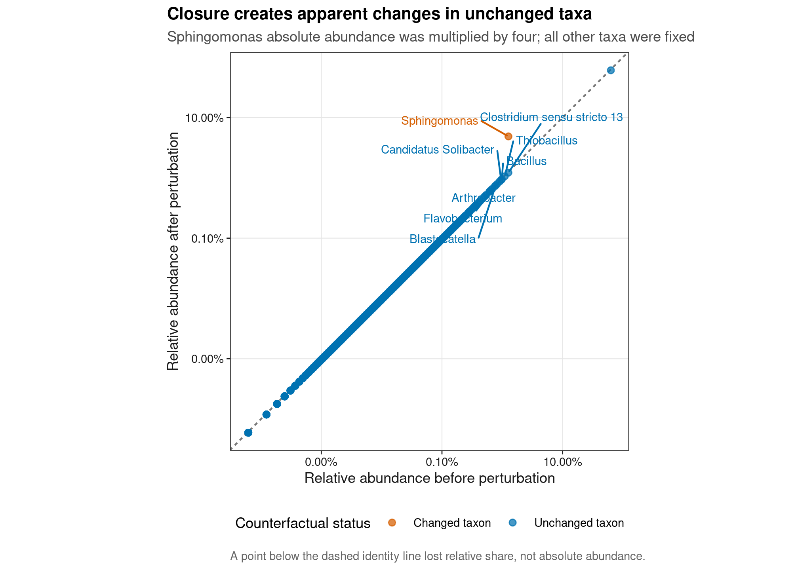
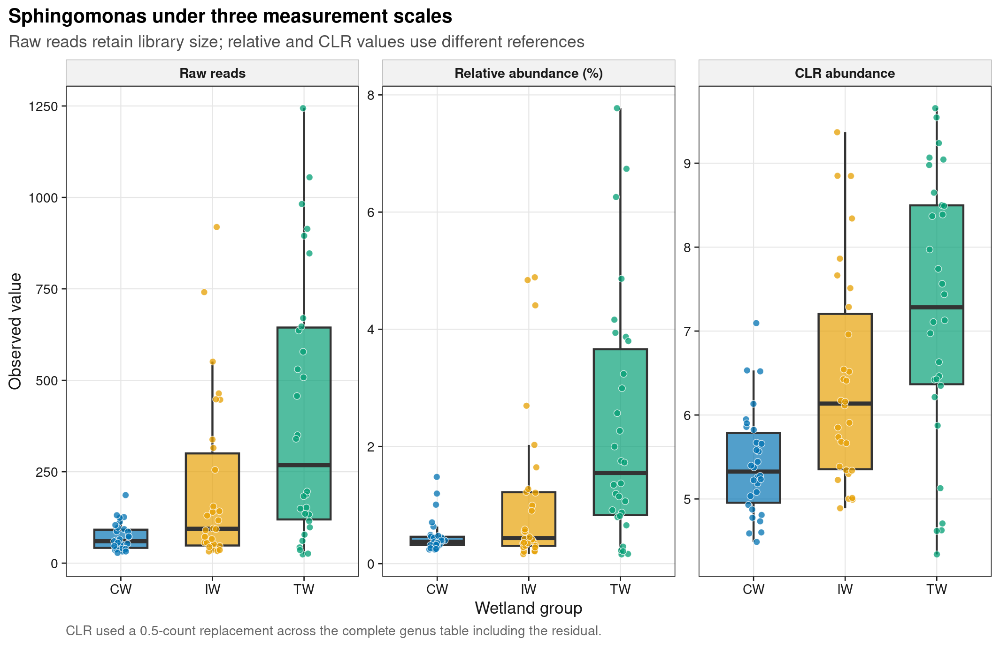
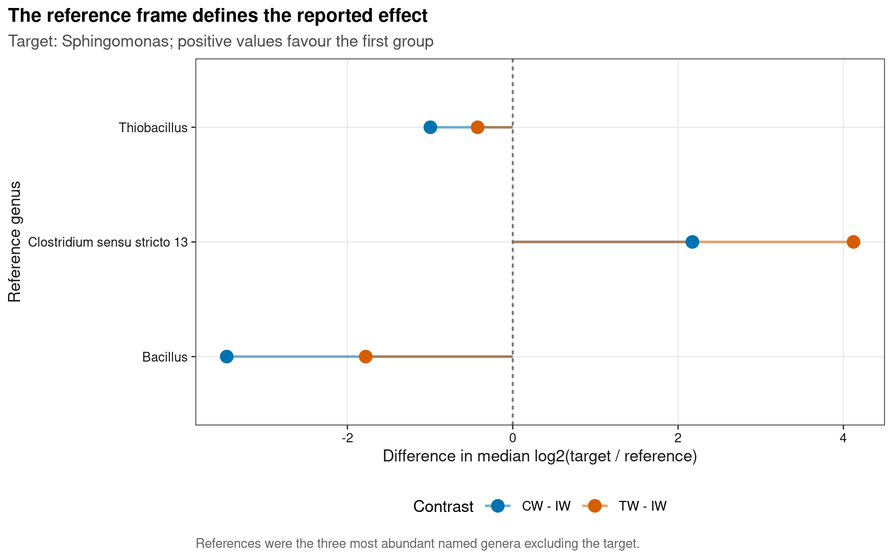

options(timeout = 600)
data_url <- "https://raw.githubusercontent.com/petemeng/microbiome-best-practices/3cb6a817e0c73ab7ecbec1cedc1ad80cbb9ecfaa/"
input_files <- c(
"data/small/metadata.tsv",
"data/small/otutab.tsv",
"data/small/taxonomy.tsv"
)
for (path in input_files) {
dir.create(dirname(path), recursive = TRUE, showWarnings = FALSE)
if (!file.exists(path)) download.file(paste0(data_url, path), path, mode = "wb", quiet = TRUE)
}CoDA 成分数据原理：为什么不能比原始丰度
微生物丰度是成分数据
Gloor et al. (2017)系统解释了为什么高通量测序表是 composition，而不是绝对丰度表。下面用公开湿地 16S 计数展示三类直接影响分析的证据：真实组成上的反事实闭合实验、同一属在三种测量尺度下的组间分布，以及 reference 改变时效应量如何移动。
重要先给结论
测序 reads 是在每个样本的有限文库中分配的份额。raw reads 同时受微生物组成和 library size 影响；relative abundance 消除了 library size，却引入总和固定为 1 的 closure；CLR/ALR 把问题改写为“某 taxon 相对一个 reference 变化多少”。因此，“某菌的百分比下降”不等于“每克样本中的细胞数下降”，而不说明 reference 的 log-ratio 也不是无条件的绝对变化。
本页数据来自 microeco 2.0.0 随包分发的真实湿地 16S 数据，包含 conventional wetland（CW）、intensive wetland（IW）和 temporal wetland（TW）各 30 个样本。分析始终从三件套读起；属级已知 reads 仅占全部 reads 的一部分，未注释部分保留为 denominator residual，不被解释成一个生物学 taxon。
下载并读取本次分析的数据
需要 R，以及 ggplot2、ggrepel、knitr、ragg、scales、svglite。本次使用中国湿地的 OTU count 表、分类表和样本信息表。
在一个新建的文件夹中运行以下代码，下载文件后按文中的顺序继续分析：
library(ggplot2)
set.seed(20260730)
font_pub <- "sans"
pal_pub <- c(
blue = "#0072B2", orange = "#E69F00", green = "#009E73",
vermillion = "#D55E00", purple = "#CC79A7", sky = "#56B4E9",
yellow = "#F0E442", grey = "#6B7280"
)
scale_color_pub <- function(..., values = unname(pal_pub)) {
ggplot2::scale_color_manual(..., values = values)
}
scale_fill_pub <- function(..., values = unname(pal_pub)) {
ggplot2::scale_fill_manual(..., values = values)
}
theme_pub <- function(base_size = 10, base_family = font_pub) {
ggplot2::theme_bw(base_size = base_size, base_family = base_family) +
ggplot2::theme(
panel.grid.minor = ggplot2::element_blank(),
panel.grid.major = ggplot2::element_line(
colour = "#E6E6E6", linewidth = 0.25
),
axis.text = ggplot2::element_text(colour = "#1A1A1A"),
axis.title = ggplot2::element_text(colour = "#1A1A1A"),
axis.ticks = ggplot2::element_line(
colour = "#1A1A1A", linewidth = 0.3
),
plot.title.position = "plot",
plot.title = ggplot2::element_text(
face = "bold", size = ggplot2::rel(1.15)
),
plot.subtitle = ggplot2::element_text(colour = "#4D4D4D"),
plot.caption = ggplot2::element_text(colour = "#666666", hjust = 0),
strip.background = ggplot2::element_rect(
fill = "#F2F2F2", colour = "#B3B3B3", linewidth = 0.3
),
strip.text = ggplot2::element_text(face = "bold"),
legend.key = ggplot2::element_blank(),
legend.position = "top"
)
}
save_pub <- function(
plot, file_base, width = 89, height = 70, units = "mm",
dpi = 600, write_svg = TRUE, write_tiff = TRUE,
base_family = font_pub
) {
dir.create(dirname(file_base), recursive = TRUE, showWarnings = FALSE)
ggplot2::ggsave(
paste0(file_base, ".pdf"), plot, width = width, height = height,
units = units, device = grDevices::cairo_pdf,
family = base_family, bg = "white"
)
if (write_svg) ggplot2::ggsave(
paste0(file_base, ".svg"), plot, width = width, height = height,
units = units, device = svglite::svglite, bg = "white"
)
ggplot2::ggsave(
paste0(file_base, ".png"), plot, width = width, height = height,
units = units, dpi = dpi, device = ragg::agg_png, bg = "white"
)
if (write_tiff) ggplot2::ggsave(
paste0(file_base, ".tiff"), plot, width = width, height = height,
units = units, dpi = dpi, device = ragg::agg_tiff,
compression = "lzw", bg = "white"
)
invisible(plot)
}读取三件套并核对结构
read_keyed_tsv <- function(path) {
x <- readr::read_tsv(
path, show_col_types = FALSE, progress = FALSE,
name_repair = "minimal", na = character()
)
ids <- as.character(x[[1L]])
stopifnot(!anyDuplicated(ids))
out <- as.data.frame(x[-1L], check.names = FALSE)
rownames(out) <- ids
out
}
otutab_raw <- read_keyed_tsv("data/small/otutab.tsv")
taxonomy <- read_keyed_tsv("data/small/taxonomy.tsv")
metadata <- read_keyed_tsv("data/small/metadata.tsv")
otutab <- as.matrix(data.frame(
lapply(otutab_raw, as.integer), check.names = FALSE
))
rownames(otutab) <- rownames(otutab_raw)
metadata$Group <- factor(metadata$Group, levels = c("CW", "IW", "TW"))
stopifnot(
identical(rownames(otutab), rownames(taxonomy)),
identical(colnames(otutab), rownames(metadata)),
nrow(otutab) == 13628L,
ncol(otutab) == 90L,
sum(otutab) == 1619670L,
all(otutab >= 0L),
all(otutab == round(otutab))
)
head(otutab[, 1:5])
head(taxonomy)
head(metadata) S1 S2 S3 S4 S5
OTU_4272 1 0 1 1 0
OTU_236 1 4 0 2 35
OTU_399 9 2 2 4 4
OTU_1556 5 18 7 3 2
OTU_32 83 9 19 8 102
OTU_706 0 1 0 1 0
Kingdom Phylum
OTU_4272 k__Bacteria p__Firmicutes
OTU_236 k__Bacteria p__Chloroflexi
OTU_399 k__Bacteria p__Proteobacteria
OTU_1556 k__Bacteria p__Acidobacteria
OTU_32 k__Archaea p__Miscellaneous Crenarchaeotic Group
OTU_706 k__Bacteria p__Actinobacteria
Class Order Family
OTU_4272 c__Bacilli o__Bacillales f__
OTU_236 c__ o__ f__
OTU_399 c__Betaproteobacteria o__Nitrosomonadales f__Nitrosomonadaceae
OTU_1556 c__Acidobacteria o__Subgroup 17 f__
OTU_32 c__ o__ f__
OTU_706 c__Actinobacteria o__Frankiales f__Nakamurellaceae
Genus Species
OTU_4272 g__ s__
OTU_236 g__ s__
OTU_399 g__ s__
OTU_1556 g__ s__
OTU_32 g__ s__
OTU_706 g__Nakamurella s__
Group Type Saline
S1 IW NE Non-saline soil
S2 IW NE Non-saline soil
S3 IW NE Non-saline soil
S4 IW NE Non-saline soil
S5 IW NE Non-saline soil
S6 IW NE Non-saline soil下载完整 R 脚本。脚本包含数据下载、计算和图形导出。
首次使用时安装 R 包
install.packages(c(
"ggplot2", "ggrepel", "patchwork", "ragg", "readr", "scales",
"svglite", "systemfonts"
))读数只给比例尺，不给绝对刻度
Closure 会把一个分子的变化传给所有分子
若样本的绝对数量向量为 \(a=(a_1,\ldots,a_D)\)，测序后常见的相对丰度是
\[ x_i = \mathcal{C}(a)_i = \frac{a_i}{\sum_{j=1}^D a_j}, \qquad \sum_i x_i=1. \]
即便只有 \(a_1\) 真正增加，分母也会变大，使所有 \(i\ne1\) 的 \(x_i\) 被动下降。这个负向联动来自数学闭合，不等于物种之间发生抑制。
原始读数也不等于绝对丰度
对 feature \(i\)、样本 \(s\)，一个简化的观测模型是
\[ Y_{is}\mid N_s,p_{is}\sim\mathrm{Multinomial}(N_s,p_{is}), \]
其中 \(N_s\) 是 library size，\(p_{is}\) 是测到的组成。Y 增加可能来自 p 增加，也可能只是该样本测得更深；PCR、提取和 16S copy number 还会带来 taxon-specific bias。因此不能直接把 raw reads 画成“菌量”。
Log-ratio 明确写出 reference frame
Additive log-ratio（ALR）比较 taxon \(i\) 与 reference \(r\)：
\[ \operatorname{alr}_{i:r}=\log_2\frac{x_i}{x_r}. \]
Centered log-ratio（CLR）使用样本内所有组成的几何均值 \(g(x)\)：
\[ \operatorname{clr}_i=\log_2\frac{x_i}{g(x)}. \]
两者回答的都是相对问题。ALR 的 reference 必须稳定且有生物学含义；CLR 的 reference 是整套 feature 的几何均值，因此 feature filtering 与 zero replacement 都会改变坐标。
深入：为什么 CLR 总和为 0，协方差仍是奇异的
对任一样本，\(\sum_i\operatorname{clr}(x_i)=0\)。CLR 把 \(D\) 维 composition 放在一个 \(D-1\) 维子空间中，所以常规协方差矩阵不满秩。Aitchison geometry 使用 log-ratio 距离处理这个约束；不应把 CLR 后的每一列误当成彼此独立的普通连续变量。
比较原始丰度、相对丰度与对数比
按完整分类谱系聚合到属，保留未归入目标属的读数
rank_names <- c(
"Kingdom", "Phylum", "Class", "Order", "Family", "Genus", "Species"
)
clean_taxon <- function(x) {
x <- sub("^[A-Za-z]__", "", trimws(as.character(x)))
x[
is.na(x) | x == "" |
grepl(
"unclassified|unknown|unassigned|uncultured|metagenome",
x, ignore.case = TRUE
)
] <- NA_character_
x
}
taxonomy_clean <- as.data.frame(
lapply(taxonomy[rownames(otutab), rank_names], clean_taxon),
check.names = FALSE
)
known_genus <- !is.na(taxonomy_clean$Genus)
lineage_key <- apply(
taxonomy_clean[known_genus, rank_names[1:6], drop = FALSE],
1L,
function(x) paste(ifelse(is.na(x), "?", x), collapse = ";")
)
genus_counts <- rowsum(
otutab[known_genus, , drop = FALSE], lineage_key, reorder = FALSE
)
genus_lineages <- rownames(genus_counts)
genus_labels <- vapply(
strsplit(genus_lineages, ";", fixed = TRUE), tail, character(1), 1L
)
genus_ids <- make.unique(paste0("Genus:", genus_labels))
rownames(genus_counts) <- genus_ids
genus_info <- data.frame(
FeatureID = genus_ids,
DisplayTaxon = genus_labels,
Lineage = genus_lineages,
Reportable = TRUE,
stringsAsFactors = FALSE,
row.names = genus_ids
)
genus_counts <- rbind(
genus_counts,
Unclassified_residual = colSums(otutab[!known_genus, , drop = FALSE])
)
genus_info <- rbind(
genus_info,
data.frame(
FeatureID = "Unclassified_residual",
DisplayTaxon = "Unclassified residual",
Lineage = "Unclassified at genus rank",
Reportable = FALSE,
row.names = "Unclassified_residual"
)
)
data.frame(
Samples = ncol(genus_counts),
NamedGenera = sum(genus_info$Reportable),
NamedReadFraction = sum(genus_counts[genus_info$Reportable, ]) / sum(otutab),
LibraryMin = min(colSums(otutab)),
LibraryMedian = median(colSums(otutab)),
LibraryMax = max(colSums(otutab))
) Samples NamedGenera NamedReadFraction LibraryMin LibraryMedian LibraryMax
1 90 771 0.3696018 10364 15644.5 37374Unclassified_residual只让分母仍代表全部 reads；它不进入生物学命名、显著性列表或网络节点。
在真实组成上制造一个“只有一个属增加”的反事实
named_ids <- rownames(genus_info)[genus_info$Reportable]
target_id <- named_ids[which.max(rowSums(genus_counts[named_ids, , drop = FALSE]))]
target_label <- genus_info[target_id, "DisplayTaxon"]
# 90 个真实样本的平均 count composition；只把目标属乘以 4。
absolute_baseline <- rowMeans(genus_counts)
absolute_after <- absolute_baseline
absolute_after[target_id] <- 4 * absolute_after[target_id]
relative_baseline <- absolute_baseline / sum(absolute_baseline)
relative_after <- absolute_after / sum(absolute_after)
closure_audit <- data.frame(
FeatureID = names(absolute_baseline),
DisplayTaxon = genus_info[names(absolute_baseline), "DisplayTaxon"],
AbsoluteFoldChange = absolute_after / absolute_baseline,
RelativeFoldChange = relative_after / relative_baseline,
Status = ifelse(names(absolute_baseline) == target_id, "Changed taxon", "Unchanged taxon"),
stringsAsFactors = FALSE
)
closure_audit <- closure_audit[is.finite(closure_audit$RelativeFoldChange), ]
unchanged_relative_fold <- unique(round(
closure_audit$RelativeFoldChange[closure_audit$Status == "Unchanged taxon"],
12
))
stopifnot(
length(unchanged_relative_fold) == 1L,
unchanged_relative_fold < 1,
all(closure_audit$AbsoluteFoldChange[
closure_audit$Status == "Unchanged taxon"
] == 1)
)
closure_audit[order(closure_audit$RelativeFoldChange), ][1:8, ] FeatureID DisplayTaxon
Genus:Gaiella Genus:Gaiella Gaiella
Genus:Sorangium Genus:Sorangium Sorangium
Genus:Luteolibacter Genus:Luteolibacter Luteolibacter
Genus:Bryobacter Genus:Bryobacter Bryobacter
Genus:Byssovorax Genus:Byssovorax Byssovorax
Genus:Peptoclostridium Genus:Peptoclostridium Peptoclostridium
Genus:Anderseniella Genus:Anderseniella Anderseniella
Genus:Nitrospira Genus:Nitrospira Nitrospira
AbsoluteFoldChange RelativeFoldChange Status
Genus:Gaiella 1 0.9634819 Unchanged taxon
Genus:Sorangium 1 0.9634819 Unchanged taxon
Genus:Luteolibacter 1 0.9634819 Unchanged taxon
Genus:Bryobacter 1 0.9634819 Unchanged taxon
Genus:Byssovorax 1 0.9634819 Unchanged taxon
Genus:Peptoclostridium 1 0.9634819 Unchanged taxon
Genus:Anderseniella 1 0.9634819 Unchanged taxon
Genus:Nitrospira 1 0.9634819 Unchanged taxon反事实中所有未改变属的 absolute fold change 都是 1；但 closure 后，它们共享同一个小于 1 的 relative fold change。这种同步下降完全由分母变化产生。
同一属同时保留 raw、relative 与 CLR
library_size <- colSums(otutab)
relative_all <- sweep(genus_counts, 2L, library_size, "/")
pseudocount <- 0.5
log_counts <- log2(genus_counts + pseudocount)
clr_all <- sweep(log_counts, 2L, colMeans(log_counts), "-")
measurement_views <- rbind(
data.frame(
SampleID = colnames(genus_counts), Group = metadata$Group,
Scale = "Raw reads", Value = as.numeric(genus_counts[target_id, ])
),
data.frame(
SampleID = colnames(genus_counts), Group = metadata$Group,
Scale = "Relative abundance (%)",
Value = 100 * as.numeric(relative_all[target_id, ])
),
data.frame(
SampleID = colnames(genus_counts), Group = metadata$Group,
Scale = "CLR abundance", Value = as.numeric(clr_all[target_id, ])
)
)
measurement_views$Scale <- factor(
measurement_views$Scale,
levels = c("Raw reads", "Relative abundance (%)", "CLR abundance")
)
# Scale invariance: doubling every count in a sample leaves its composition unchanged.
sample_one <- genus_counts[, 1L]
stopifnot(all.equal(
sample_one / sum(sample_one),
(2 * sample_one) / sum(2 * sample_one),
tolerance = 1e-14
))CLR 中的 0.5 是显式 sensitivity parameter，不是“真实的半条 read”。正式分析要比较合理的 zero replacement，或使用能把采样不确定性纳入模型的方法。
换三个 reference，看同一 contrast 如何移动
reference_candidates <- setdiff(
named_ids[order(rowSums(genus_counts[named_ids, , drop = FALSE]), decreasing = TRUE)],
target_id
)[1:3]
reference_effects <- do.call(rbind, lapply(reference_candidates, function(ref_id) {
alr <- log2(
(genus_counts[target_id, ] + pseudocount) /
(genus_counts[ref_id, ] + pseudocount)
)
do.call(rbind, lapply(c("CW", "TW"), function(group_name) {
data.frame(
Contrast = paste0(group_name, " - IW"),
Reference = genus_info[ref_id, "DisplayTaxon"],
MedianLog2RatioDifference = median(alr[metadata$Group == group_name]) -
median(alr[metadata$Group == "IW"]),
stringsAsFactors = FALSE
)
}))
}))
reference_effects Contrast Reference MedianLog2RatioDifference
1 CW - IW Clostridium sensu stricto 13 2.1731522
2 TW - IW Clostridium sensu stricto 13 4.1226147
3 CW - IW Thiobacillus -0.9962775
4 TW - IW Thiobacillus -0.4250910
5 CW - IW Bacillus -3.4596699
6 TW - IW Bacillus -1.7788095ALR effect 的方向和大小属于“target 相对 reference”的性质。若三个 reference 给出不同结论，先审计 reference 的稳定性，而不是挑最显著的一条。
零值、分母与参考框架怎样改变结论？
coda_audit <- data.frame(
InputOrClaim = c(
"Raw reads", "Relative abundance", "CLR/ALR", "Zeros",
"Taxonomy collapse", "Absolute claim"
),
NaiveInterpretation = c(
"Read count equals microbial load",
"Percentage change equals absolute change",
"Transformation removes all bias",
"Add one without reporting it",
"Merge every unknown label",
"Infer cells per gram from 16S alone"
),
UpgradedContract = c(
"Model library size and method-specific sampling",
"Report closure and denominator dependence",
"State the reference frame and feature set",
"Prespecify and sensitivity-test replacement",
"Aggregate by full lineage; residual is not a taxon",
"Collect QMP, qPCR/ddPCR, flow cytometry or spike-in data"
),
stringsAsFactors = FALSE
)
knitr::kable(coda_audit, caption = "Compositional audit ledger")| InputOrClaim | NaiveInterpretation | UpgradedContract |
|---|---|---|
| Raw reads | Read count equals microbial load | Model library size and method-specific sampling |
| Relative abundance | Percentage change equals absolute change | Report closure and denominator dependence |
| CLR/ALR | Transformation removes all bias | State the reference frame and feature set |
| Zeros | Add one without reporting it | Prespecify and sensitivity-test replacement |
| Taxonomy collapse | Merge every unknown label | Aggregate by full lineage; residual is not a taxon |
| Absolute claim | Infer cells per gram from 16S alone | Collect QMP, qPCR/ddPCR, flow cytometry or spike-in data |
最重要的升级不是在所有分析前机械地做 CLR，而是先写清 estimand：要比较比例、相对某个 reference 的 abundance，还是单位样本中的绝对数量。差异丰度、网络和多变量模型需要各自匹配的 composition-aware 方法；一个 transformation 不能替代研究设计、污染控制和测量校准。
看清分母与参照改变了什么
图 1：closure 把单一变化扩散到全部相对丰度
label_ids <- unique(c(
target_id,
head(
names(sort(relative_baseline[named_ids], decreasing = TRUE)),
8L
)
))
closure_plot_data <- data.frame(
FeatureID = names(relative_baseline),
Before = as.numeric(relative_baseline),
After = as.numeric(relative_after),
Status = ifelse(names(relative_baseline) == target_id, "Changed taxon", "Unchanged taxon"),
Label = ifelse(
names(relative_baseline) %in% label_ids,
genus_info[names(relative_baseline), "DisplayTaxon"],
NA_character_
)
)
closure_plot <- ggplot(
closure_plot_data,
aes(x = Before, y = After, colour = Status)
) +
geom_abline(slope = 1, intercept = 0, linetype = "22", colour = "#777777") +
geom_point(alpha = 0.72, size = 1.6) +
ggrepel::geom_text_repel(
aes(label = Label), family = font_pub, size = 2.5,
min.segment.length = 0, max.overlaps = Inf, show.legend = FALSE
) +
scale_x_log10(labels = scales::label_percent(accuracy = 0.01)) +
scale_y_log10(labels = scales::label_percent(accuracy = 0.01)) +
scale_colour_manual(values = c(
"Changed taxon" = pal_pub[["vermillion"]],
"Unchanged taxon" = pal_pub[["blue"]]
)) +
coord_equal() +
labs(
title = "Closure creates apparent changes in unchanged taxa",
subtitle = paste0(
target_label, " absolute abundance was multiplied by four; all other taxa were fixed"
),
x = "Relative abundance before perturbation",
y = "Relative abundance after perturbation",
colour = "Counterfactual status",
caption = "A point below the dashed identity line lost relative share, not absolute abundance."
) +
theme_pub(base_size = 8.8) +
theme(legend.position = "bottom")
save_pub(closure_plot, "figures/30-closure-artifact", width = 170, height = 122)
closure_plot
图 2：同一属的三种纵轴不是同一个 estimand
three_scales_plot <- ggplot(
measurement_views,
aes(x = Group, y = Value, fill = Group)
) +
geom_boxplot(width = 0.58, outlier.shape = NA, alpha = 0.68) +
geom_point(
position = position_jitter(width = 0.09, height = 0, seed = 20260730),
shape = 21, colour = "white", stroke = 0.25, size = 1.45, alpha = 0.75
) +
facet_wrap(~Scale, scales = "free_y", nrow = 1L) +
scale_fill_manual(values = c(
CW = pal_pub[["blue"]], IW = pal_pub[["orange"]], TW = pal_pub[["green"]]
)) +
labs(
title = paste0(target_label, " under three measurement scales"),
subtitle = "Raw reads retain library size; relative and CLR values use different references",
x = "Wetland group", y = "Observed value", fill = "Group",
caption = "CLR used a 0.5-count replacement across the complete genus table including the residual."
) +
theme_pub(base_size = 8.5) +
theme(legend.position = "none")
save_pub(three_scales_plot, "figures/30-measurement-scales", width = 180, height = 116)
three_scales_plot
图 3：reference 不是图例细节，而是效应定义
reference_plot <- ggplot(
reference_effects,
aes(x = MedianLog2RatioDifference, y = Reference, colour = Contrast)
) +
geom_vline(xintercept = 0, linetype = "22", colour = "#777777") +
geom_segment(
aes(x = 0, xend = MedianLog2RatioDifference, yend = Reference),
linewidth = 0.65, alpha = 0.55
) +
geom_point(size = 2.8) +
scale_colour_manual(values = c(
"CW - IW" = pal_pub[["blue"]], "TW - IW" = pal_pub[["vermillion"]]
)) +
labs(
title = "The reference frame defines the reported effect",
subtitle = paste0("Target: ", target_label, "; positive values favour the first group"),
x = "Difference in median log2(target / reference)",
y = "Reference genus", colour = "Contrast",
caption = "References were the three most abundant named genera excluding the target."
) +
theme_pub(base_size = 8.8) +
theme(legend.position = "bottom")
save_pub(reference_plot, "figures/30-reference-frame", width = 170, height = 107)
reference_plot
stopifnot(
target_id %in% rownames(genus_counts),
length(reference_candidates) == 3L,
nrow(reference_effects) == 6L,
all(is.finite(reference_effects$MedianLog2RatioDifference)),
all(file.exists(paste0(
rep(c(
"figures/30-closure-artifact", "figures/30-measurement-scales",
"figures/30-reference-frame"
), each = 4L),
rep(c(".pdf", ".svg", ".png", ".tiff"), times = 3L)
)))
)常见坑
注意坑 1：把 raw reads 当作菌量
同一绝对样本多测一倍 reads，raw count 可近似翻倍。没有单位质量/体积、外标或总负荷测量时，reads 不是 cells、CFU 或 gene copies。
注意坑 2：把相对下降写成被抑制
一个优势 taxon 增加就能让其余份额全部下降。需要绝对定量、培养/干预或独立机制证据，才能把 closure pattern 升级为生态抑制。
注意坑 3：CLR 后直接写 fold change
CLR difference 是相对几何均值的 log-ratio difference，不是 absolute fold change。Methods 和坐标轴必须写清 reference frame。
注意坑 4：悄悄给所有零加 1
伪计数在低丰度 feature 上可主导 log-ratio。报告数值、应用位置和 sensitivity；不要在 count method 前先统一加伪计数。
注意坑 5：把所有 unknown 合成一个菌
不同 lineage 的未注释 feature 不能被解释成同一个 taxon。残差可用于守住 denominator，但不能进入 biomarker 名单。
注意坑 6：先看显著性再选 reference
这会把 reference 选择变成未校正的多重尝试。reference 或稳定 reference set 应在查看目标 contrast 前预声明，并做敏感性分析。
报告组成数据变换与参照的方法与限制
Amplicon counts were treated as compositional observations rather than absolute microbial loads. The feature table, seven-rank taxonomy table, and sample metadata were imported independently and aligned by explicit identifiers. ASVs were aggregated at genus rank using the complete taxonomic lineage as the grouping key. Reads lacking a reportable genus assignment were retained as a single denominator residual but were excluded from taxon-level interpretation. Raw read counts, total-sum-scaled relative abundances, and centered log-ratio coordinates were retained as distinct measurement scales. CLR coordinates were calculated as log2(count + 0.5) minus the sample-wise mean log2(count + 0.5); the 0.5-count replacement was prespecified and treated as a sensitivity parameter. To demonstrate closure, the empirical mean genus-count composition was perturbed by multiplying the most abundant named genus by four while holding all remaining absolute values fixed before reclosure. Additive log-ratio sensitivity was evaluated against the three most abundant named non-target genera. All figures used English labels and were exported as PDF, SVG, 600 ppi PNG, and 600 ppi LZW-compressed TIFF.
把 genus rank、zero replacement、reference set 和数据实际单位替换为你的合同。若有绝对负荷，Methods 还要给样本质量/体积、测量平台、校准曲线、回收率和 normalization formula。
将组成数据变换与参照用于自己的研究
只改三件套路径和分组列
otutab_raw <- read_keyed_tsv("your_data/otutab.tsv")
taxonomy <- read_keyed_tsv("your_data/taxonomy.tsv")
metadata <- read_keyed_tsv("your_data/metadata.tsv")
group_column <- "Treatment"otutab 必须是 feature × sample 的非负整数表；taxonomy 行名与 feature 对齐，metadata 行名与 sample 对齐。先核对 ID、重复、缺失和 library size，再谈 transformation。
taxonomy 只有一列时内联拆成七列
rank_names <- c(
"Kingdom", "Phylum", "Class", "Order", "Family", "Genus", "Species"
)
parts <- strsplit(taxonomy_raw$Taxon, ";", fixed = TRUE)
taxonomy_matrix <- t(vapply(parts, function(x) {
x <- trimws(x)
length(x) <- length(rank_names)
x
}, character(length(rank_names))))
taxonomy <- as.data.frame(taxonomy_matrix, stringsAsFactors = FALSE)
names(taxonomy) <- rank_names
rownames(taxonomy) <- taxonomy_raw$FeatureID在代码前写一句 estimand
- “比较 treatment 后 taxon 相对预声明 reference set 的变化”；或
- “比较单位克样本中的 taxon cell abundance”；或
- “筛查与 outcome 条件相关的 relative abundance pattern”。
这三句话需要不同输入和模型。若研究问题是第二句，还需要总负荷、qPCR/ddPCR、flow cytometry 或 extraction-stage spike-in；只换一个 R 包无法补出绝对刻度。
参考
- Gloor GB, Macklaim JM, Pawlowsky-Glahn V, Egozcue JJ. Microbiome Datasets Are Compositional: And This Is Not Optional. Frontiers in Microbiology. 2017;8:2224. doi:10.3389/fmicb.2017.02224.
- Aitchison J. The Statistical Analysis of Compositional Data. Journal of the Royal Statistical Society: Series B. 1982;44(2):139–177. doi:10.1111/j.2517-6161.1982.tb01195.x.
- Quinn TP, Erb I, Richardson MF, Crowley TM. Understanding sequencing data as compositions: an outlook and review. Bioinformatics. 2018;34(16):2870–2878. doi:10.1093/bioinformatics/bty175.
- Liu C, Cui Y, Li X, Yao M. microeco: an R package for data mining in microbial community ecology. FEMS Microbiology Ecology. 2021;97(2):fiaa255. doi:10.1093/femsec/fiaa255.
- McMurdie PJ, Holmes S. phyloseq: An R Package for Reproducible Interactive Analysis and Graphics of Microbiome Census Data. PLOS ONE. 2013;8(4):e61217. doi:10.1371/journal.pone.0061217.